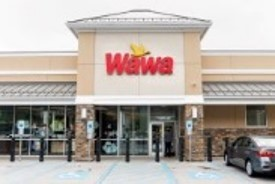

The ultimate iconic Philly food is the cheesesteak. Invented by Pat Olivieri of Pat’s Steaks in 1930 and imitated by many, a true Philly cheesesteak requires thinly sliced beef and a crusty roll. But the choice of cheese — provolone, American or Cheez Whiz — is a matter of great debate. So is the choice of sandwich shop. The age-old feud between Pat’s King of Steaks and its across-the-street rival Geno’s Steaks draws thousands of visitors to Ninth Street and Passyunk Avenue for taste-offs. Other spots like Dalessandro’s Steaks and Hoagies, John’s Roast Pork, Joe’s Steak + Soda Shop, Steve’s Prince of Steaks, Tony Luke’s, Jim’s Steaks, Max’s Steaks and Delco Steaks also have impressive numbers of devoted fans. Your next best cheesesteak awaits with our guide on where to find them in Philly.
Wawa

In and beyond the city, the ever-expanding homegrown convenience store chain Wawa inspires fierce loyalty. Customers can’t go wrong when ordering from the market’s expansive menu of delicious made-to-order food and drinks, which includes hot and cold sandwiches like hoagies and sourdough melts; soups and sides like mac and cheese and mashed potatoes; and specialty coffee drinks and frozen beverages like lattes and milkshakes. A variety of standard convenience store fare is available as well.